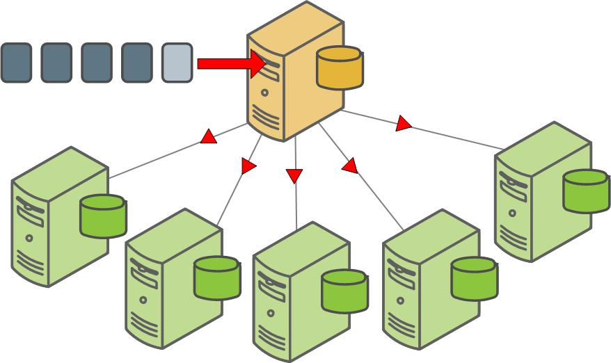

Backup and Restore Overview
SynxDB supports parallel and non-parallel methods for backing up and restoring databases. Parallel operations scale regardless of the number of segments in your system, because segment hosts each write their data to local disk storage simultaneously. With non-parallel backup and restore operations, the data must be sent over the network from the segments to the master, which writes all of the data to its storage. In addition to restricting I/O to one host, non-parallel backup requires that the master have sufficient local disk storage to store the entire database.
Parallel Backup with gpbackup and gprestore
gpbackup and gprestore are the SynxDB backup and restore utilities. gpbackup utilizes ACCESS SHARE locks at the individual table level, instead of EXCLUSIVE locks on the pg_class catalog table. This enables you to run DML statements during the backup, such as CREATE, ALTER, DROP, and TRUNCATE operations, as long as those operations do not target the current backup set.
Backup files created with gpbackup are designed to provide future capabilities for restoring individual database objects along with their dependencies, such as functions and required user-defined datatypes. See Parallel Backup with gpbackup and gprestore for more information.
Non-Parallel Backup with pg_dump
The PostgreSQL pg_dump and pg_dumpall non-parallel backup utilities can be used to create a single dump file on the master host that contains all data from all active segments.
The PostgreSQL non-parallel utilities should be used only for special cases. They are much slower than using the SynxDB backup utilities since all of the data must pass through the master. Additionally, it is often the case that the master host has insufficient disk space to save a backup of an entire distributed SynxDB.
The pg_restore utility requires compressed dump files created by pg_dump or pg_dumpall. To perform a non-parallel restore using parallel backup files, you can copy the backup files from each segment host to the master host, and then load them through the master.

Another non-parallel method for backing up SynxDB data is to use the COPY TO SQL command to copy all or a portion of a table out of the database to a delimited text file on the master host.